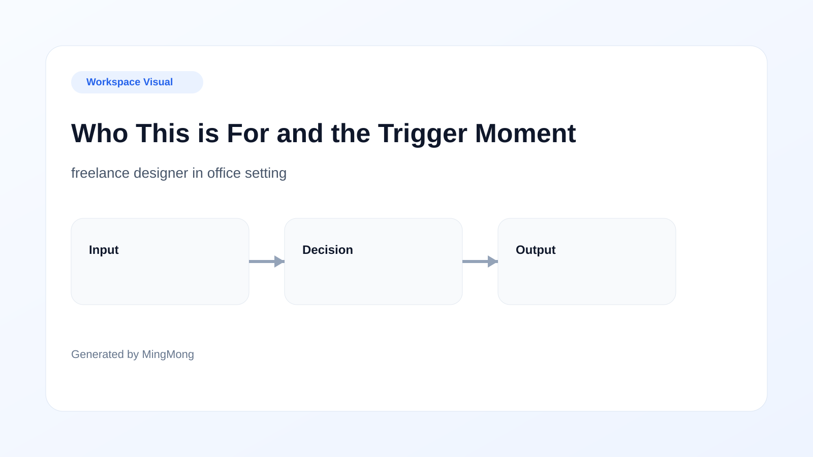
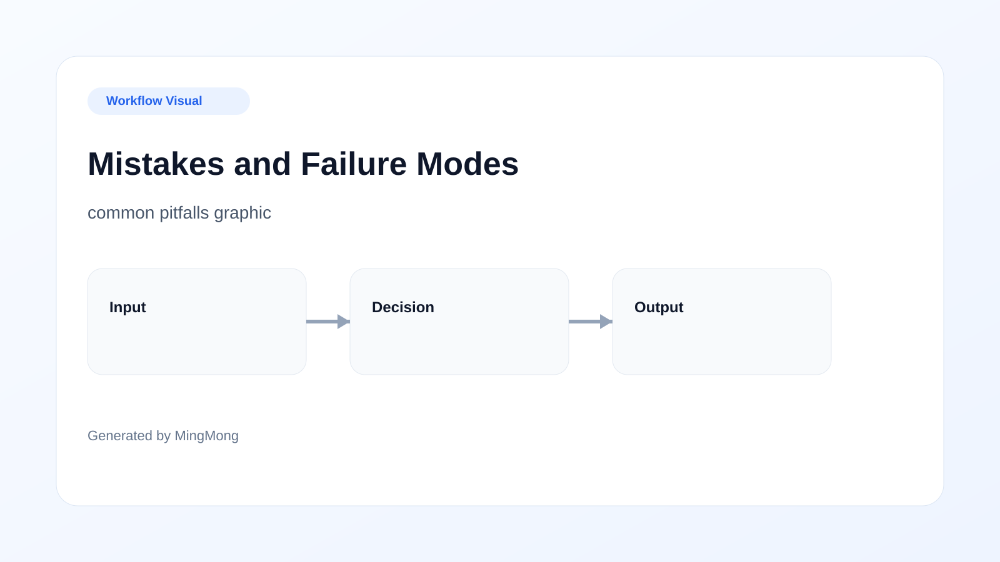
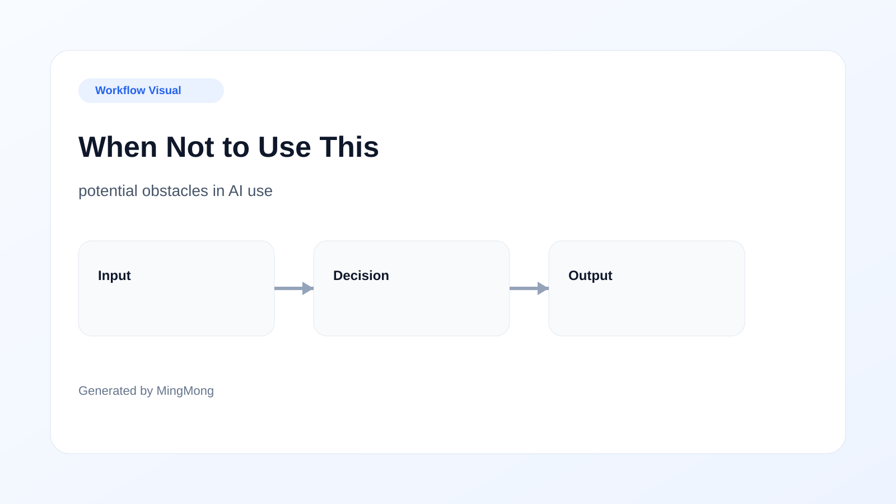
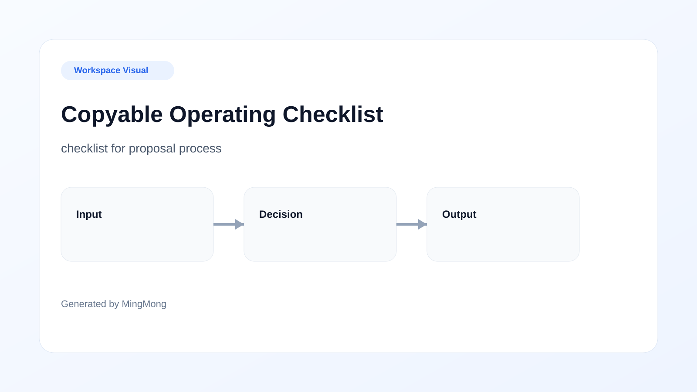

Editorial note: This article has been reviewed for practical usefulness and insights, and it will be updated as workflows evolve in the design landscape.
TL;DR
AI can significantly reduce proposal approval times for designers, helping to initiate projects faster. A well-structured, advanced proposal review system enhances workflow and improves client interactions. However, understanding when to use automation versus human input is crucial for maximizing effectiveness.

Who This is For and the Trigger Moment
If you're a freelance designer juggling multiple client proposals, you know the frustration of waiting for approvals. Delays can disrupt your workflow, leading to postponed projects and a backlog of work. This article is specifically tailored for freelance designers experiencing such hurdles. At a trigger moment, such as when an exciting new project aligns with your schedule, the last thing you want is to be held up by a lengthy approval process. A swift proposal review system can be the difference between starting a project on time and watching it slip away. Utilize AI-driven tools designed to enhance this workflow, making approval seamless and efficient, ultimately allowing you to focus on your creative output.
What Makes the Problem Expensive
Delays in proposal approvals can lead to significant financial setbacks. Consider a scenario where a design project worth $5,000 is delayed for a week due to slow client responses. The immediate effect isn’t just lost revenue—it can stall your entire workflow, affecting subsequent projects. Additionally, recurrent delays might cause clients to lose trust or seek other freelancers, escalating the issue further. This situation exemplifies an expensive problem where time translates into money. By understanding these costs associated with delayed approvals, you can make informed decisions to adopt an advanced proposal review system that prevents such issues. Establishing a proactive approach to communicate deadlines can be the key in mitigating these financial impacts.

The System Design
Designing an advanced proposal review system powered by AI involves a series of strategic decisions. Begin by integrating AI tools that facilitate immediate feedback, which allows designers to refine their proposals based on client expectations before submission. A successful system would feature automated reminders, client notifications, and a comprehensive feedback loop. The diagram illustrates how this workflow keeps you informed at each step—from proposal creation to final approvals. Furthermore, implementing features like document templates and real-time chat options will enhance communication and streamline the process. The essence of this system is reducing delays through these integration features, thereby making approvals quicker and less taxing on your time.
Implementation Steps
Implementing an advanced proposal review system starts with clearly defined setup steps. Firstly, evaluate your current workflow to identify inefficiencies. Next, choose an AI tool that aligns with your needs—look for features like automated request prompts and seamless feedback mechanisms. After selecting the right software, it's crucial to conduct training sessions to familiarize your team with its functionalities. A common mistake is assuming that merely adopting a tool will suffice—training is vital for maximizing its potential. Establish rules on when to use AI feedback and when to rely on human creativity, recognizing the tradeoff between automation and artistic touch. This dual approach will ensure that your workflow remains intact while enhancing efficiency.
Tool Choice and Process Boundaries
Choosing the right AI tools for your proposal approval process can be daunting given the plethora of options available. Therefore, it’s essential to evaluate each tool against your specific needs. For instance, tools that offer customizable templates and project management integration would be ideal for freelance designers. However, it’s crucial to determine the process boundaries—certain tools may work well for quick projects but might not handle intricate proposals effectively. Recognizing these tradeoffs allows you to set realistic expectations. Always keep a checklist handy including critical features you need versus those that might enhance your functionality later. This approach will ensure informed decisions, saving you from pitfalls related to inappropriate tool adoption.

Mistakes and Failure Modes
When deploying AI for proposal reviews, several mistakes can jeopardize your workflow. One common mistake is not providing sufficient training for you and your clients; without understanding the tools, clients might inadvertently make errors that slow down approvals. Similarly, failing to customize the feedback process to suit specific projects can lead to frustration and wasted time. Another failure mode is underestimating the importance of a structured checklist that guides both you and your clients through the necessary steps. Not addressing these issues could lead to significant delays and client dissatisfaction, undermining the advantages of the proposal review system you sought to establish.

When Not to Use This
Although AI can dramatically streamline proposal approvals, there are specific scenarios where its use may not be beneficial. For instance, when dealing with clients known for unresponsive behavior, an automated system may be ineffective. Complex approvals requiring multiple stakeholders can also lead to miscommunications if not managed correctly. In such circumstances, relying on human interaction may be more advantageous despite the time-consuming nature of traditional systems. By maintaining awareness of these limitations, you can make more informed decisions about when to apply the advanced proposal review system and when to revert to conventional approval methods.

Copyable Operating Checklist
To help you take action swiftly, here's a copyable checklist that outlines the necessary steps for implementing your advanced proposal review system: 1. Identify inefficiencies in your current workflow. 2. Select an AI tool that meets your specific needs. 3. Set up your chosen tool, ensuring it is linked with your proposal software. 4. Conduct training sessions for all parties involved. 5. Establish a streamlined feedback process with clear templates. 6. Define areas where AI can assist and where human creativity is needed. 7. Regularly review and adjust your process to accommodate feedback. This checklist serves as a guideline, helping to ensure you don’t overlook any crucial steps during implementation.
FAQ
How can AI tools help in speeding up proposal approvals?
AI tools automate feedback and integrate with project management systems, allowing designers to submit proposals that get approved without lengthy revisions.
What are the best practices for using AI in design proposals?
Key practices include regular training, understanding the tool's limitations, and maintaining open lines of communication with clients.
Can AI tools replace human input in proposals?
While AI can enhance efficiency, human touch is essential for creative proposals where nuanced understanding is required.
What if my client prefers traditional methods of proposal review?
In such cases, it's important to balance both approaches and allow for flexibility in communication to keep the workflow smooth.
Search more articles
Find related tools, workflows, and guides.
Photo credits
- Photo 2: Erik Mclean via Unsplash
- Photo 3: Kelly Sikkema via Unsplash
- Photo 4: Edho Pratama via Unsplash
- Photo 5: Kelly Sikkema via Unsplash